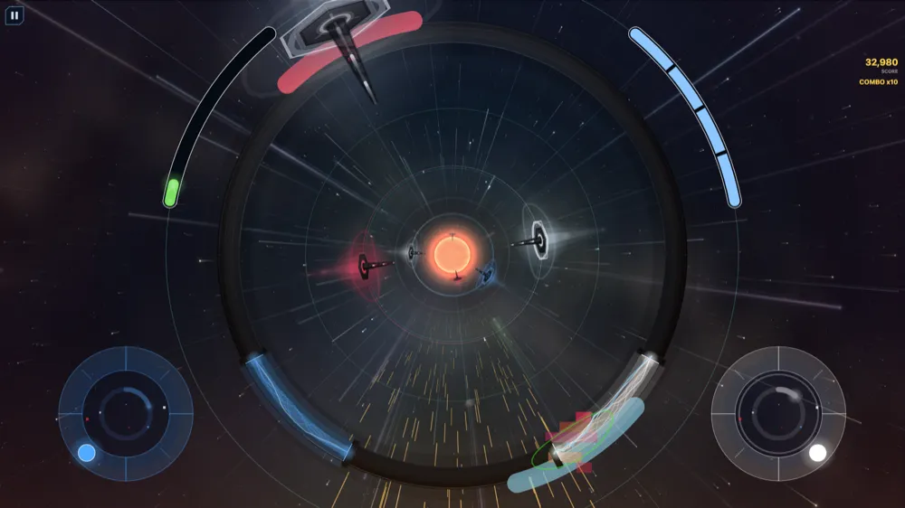
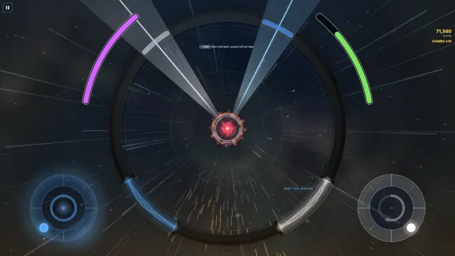
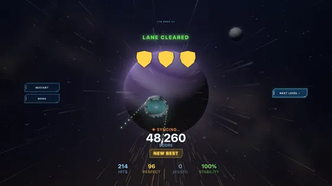
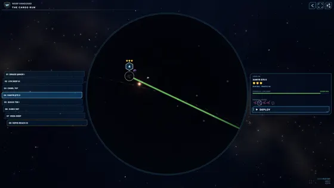

You're playing it before anyone else. Two thumbs, one lane, and everything that wants your convoy has to come through you.




Only works once I've added your address — otherwise Play will just say the app isn't available.
Please leave it installed for two weeks. Google won't let the game launch until enough testers have stayed opted in that long.
You don't have to play every day — just don't tidy it off your phone. Uninstalling early sets the release date back for everyone.
Or just message me. Honest reactions beat bug reports.
Each campaign ends in a duel with a warp leech — a machine clamped across the lane, drinking it. They're the best part of the game and they're normally hours away.
So: on a campaign's route map, press and hold the final relay for three seconds. A ring charges around your finger and you drop straight into that fight. All five are different puzzles.
These runs never reach the leaderboards, so you can't accidentally cheat your way onto a board. The shortcut is removed before public release — it exists for you.
"I got bored on relay 6" is worth more to me than a typo.
Crashes are reported to me automatically — but a crash with no story is just a stack trace. Tell me roughly what you were doing and it becomes fixable.
No advertising, no analytics, no tracking. If you submit a score it sends an anonymous id, the display name you type, and how the run went — nothing else.
You can delete all of it from inside the game under MY DATA. Full detail in the privacy policy.
If the link says the app isn't available, wait fifteen minutes and try again. If it still fails, it's almost always the wrong Google account.